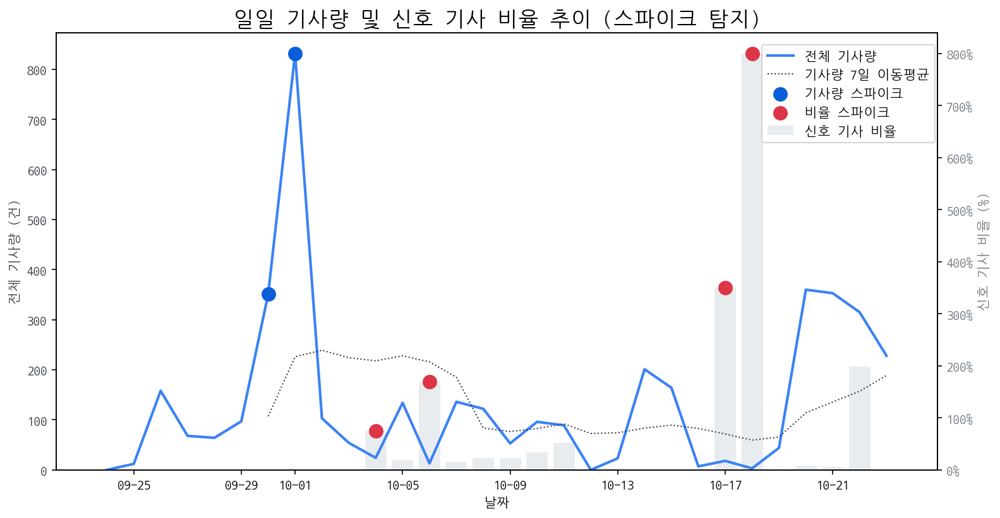

| 날짜 | 기사량 | Z-Score |
|---|---|---|
| 2025-09-30 | 351건 | 2.04 |
| 2025-10-01 | 832건 | 2.1 |
| 날짜 | 비율 | Z-Score |
|---|---|---|
| 2025-10-04 | 75.00% | 2.27 |
| 2025-10-06 | 169.23% | 2.05 |
| 2025-10-17 | 350.00% | 2.24 |
| 2025-10-18 | 800.00% | 2.06 |
| 급등 신호 | 오늘 언급량 | 어제 대비 증가 | 모멘텀(z_like) |
|---|---|---|---|
| amd | 12 | 12 | 4.45 |
| 게이밍 | 12 | 7 | 3.19 |
| samsung | 3 | 3 | 1.55 |
| 모멘텀 토픽 | z_like 점수 | 누적 언급량 |
|---|---|---|
| amd | 4.45 | 18 |
| 게이밍 | 3.19 | 30 |
| 폴더블 | 2.03 | 49 |
| samsung | 1.55 | 6 |
| asus | 1.12 | 2 |
| 날짜 | 유형 | 제목 |
|---|---|---|
| 2025-10-24 | LAUNCH | SK온 CEO, 美 조지아 주지사→페라리 CEO 연쇄 회동 |
| 2025-10-24 | LAUNCH,REGUL | 저출생·고령화 해법, 디자인에서 찾는다…공공디자인 페스티벌 |
| 2025-10-24 | LAUNCH,REGUL | 공공디자인 페스티벌 개최…저출생·고령화 해법, 디자인에서 찾는다 |
| 2025-10-24 | INVEST,LAUNCH,PARTNERSHIP | 이석희 SK온 대표, 미국 조지아 주지사·페라리 CEO 연쇄 회동 |
| 2025-10-24 | LAUNCH,REGUL | 세대 공존 위한 디자인 해법 총집합, 공공디자인 페스티벌 2025 |